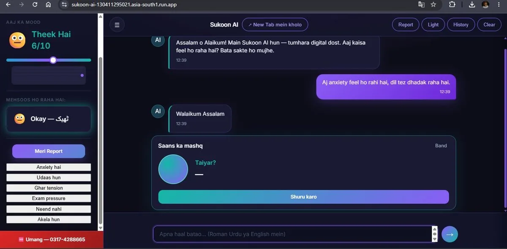
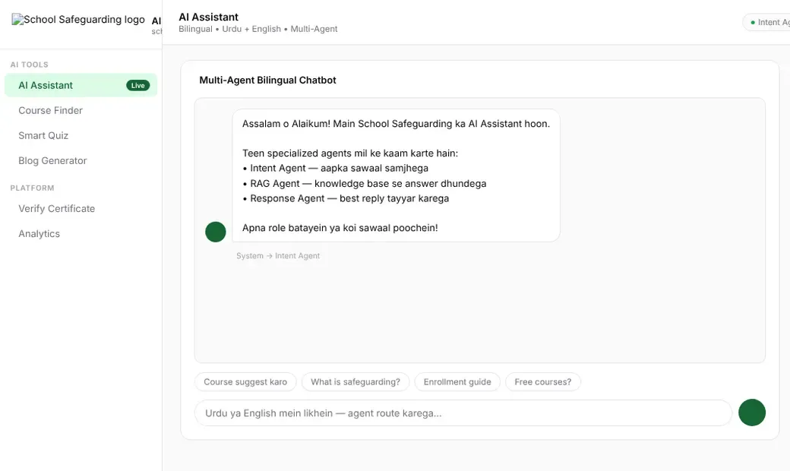
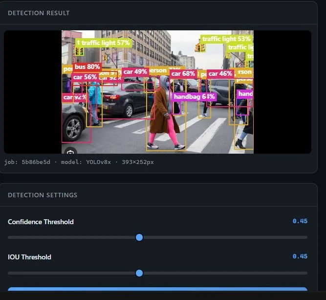
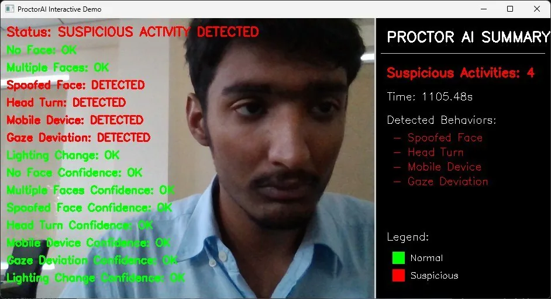
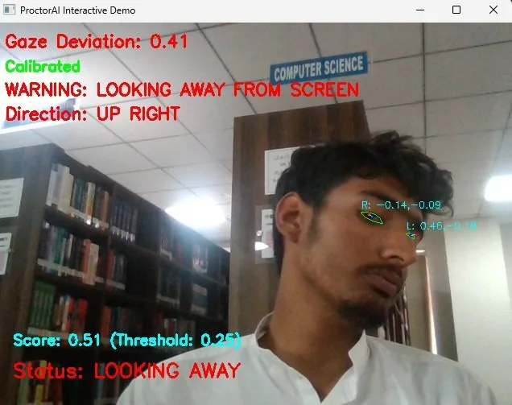
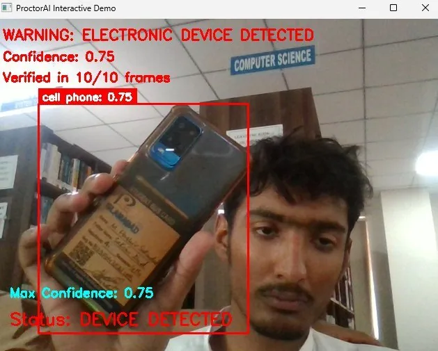
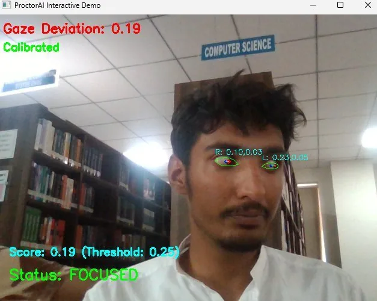

AI Agents & LLM Apps
Multi-agent systems in LangGraph and LangChain that plan, use tools, and hand off tasks to each other, built for production use.
I'm a 3rd-year AI student at PAF-IAST Islamabad who turns AI demos into real products. I build multi-agent LLM systems, RAG pipelines and computer vision APIs, and I ship them to the cloud where real people use them.
Multi-agent systems in LangGraph and LangChain that plan, use tools, and hand off tasks to each other, built for production use.
Chatbots that answer from your own documents, with vector search, citations, and guardrails, so they stay accurate.
Detection, tracking and real-time video analysis with YOLOv8, OpenCV and MediaPipe, delivered as clean APIs.
FastAPI microservices and automation pipelines, deployed on Cloud Run or Hugging Face with CI/CD.
Check before you pay: an AI scam checker for online sellers
Forward a seller's message, link, screenshot or voice note, on the web or WhatsApp. Bharosa gives a green, yellow or red verdict with evidence, in Urdu, Roman Urdu, Arabic or English. Safe deals get a PayPal checkout with buyer protection, and every check is recorded in a tamper-evident hash chain stamped on Bitcoin.

Pakistan's first Roman Urdu mental health companion
A culturally aware chatbot for stress and anxiety in Roman Urdu, Urdu and English. It detects emotions in real time, tracks mood, runs guided breathing and grounding exercises, and shares helpline details the moment it detects a crisis.

Bilingual multi-agent assistant for a training platform
An AI suite for a school safeguarding course platform. Intent, RAG and response agents answer in Urdu or English, alongside a course finder, smart quizzes, a blog generator, certificate verification and analytics.

Real-time object detection REST API
YOLOv8x inference with adjustable confidence and IOU thresholds. It returns annotated images and structured JSON from an async FastAPI backend with job tracking.




Real-time AI exam proctoring
It combines gaze tracking, YOLOv8 phone detection, face-spoof checks and head-turn analysis. An alert fires only when 10 of 10 frames agree, which cuts false positives, and a live dashboard logs every event.
Pakistan's AI-assisted labour marketplace. Customers describe a job in their own words, and Saath finds a nearby verified worker, quotes a fair price, books the job and tracks it live. It runs as a website, a web app and a Flutter mobile app, with one FastAPI backend.
The home page and app let a customer ask for help in plain Roman Urdu, Urdu or English. The site switches between English and Urdu in one tap.
A structured conversation flow, not a black box. It works out the service, asks a short follow-up when the location, time or urgency is missing, then matches a verified worker and gives a price range.
The mobile app has customer and worker modes, a Roman Urdu or English toggle from the first screen, and 8 service categories, from plumbing to nursing and elder care.
Workers are ranked by distance, rating, reliability and response time, with category and rating filters. Bookings are tracked live on a map until the job is done.
Workers apply with ID and skill verification and receive matched jobs. Payment by JazzCash, EasyPaisa, card or cash is held in escrow until the customer confirms the job, and an admin panel manages verification and payouts.
An autonomous research system. Give it a hard question and six agents plan it, research in parallel, verify evidence, catch contradictions and write a cited report. Every statement traces back through claim → evidence → source → URL.
A hard, open-ended question becomes sub-questions and research tasks with dependencies. A deterministic state machine in Rust controls the whole run, not the LLM.
A bounded-concurrency scheduler runs researchers in parallel, with timeouts, retries, cancellation and partial-failure handling. Rate limits honour Retry-After.
The verifier only accepts claims backed by an exact excerpt from a stored source. The contradiction detector flags where sources disagree instead of hiding it.
The synthesizer writes the report and the critic checks it against explicit review criteria. If there are gaps, the system researches again, up to 2 iterations.
Citations are built by Rust from stored sources, never by the model. A Next.js dashboard streams the run live over SSE. In one real end-to-end run it handled:
orchestrator ⇄ memory · task · time · contextA personal AI operating system: 7 specialized agents for memory, tasks, time and context, coordinated by an orchestration layer with an event bus and a conflict resolver.
wake word → whisper → langgraph → ttsA 24/7 holographic home assistant that runs fully locally. A voice pipeline routes requests to specialist agents for IoT, schedule, security and education, with ChromaDB memory.
reviews → real / fake / ai / spam → scoreA review-intelligence platform that labels a business's reviews as real, fake, AI-generated or spam and gives an overall Reality Score. It ships with a dashboard, PDF reports and a Chrome extension.
resume → ocr → semantic score → rankA Flask hiring platform. Recruiters post jobs and review ranked candidates, and candidates upload resumes to get instant semantic scoring, feedback and application tracking.
GitHub ↗image + text → opencv → gemini → jsonUpload an image with a question. OpenCV denoises and enhances it, Gemini analyses both, and the app returns strict structured JSON in a minimal chat UI.
hash → embed → cluster → best shotA fully offline photo curation engine. It finds duplicates, groups bursts and picks the best shot, then lets you choose what to keep on a local review page.
brackets → merge → style → exportOffline real-estate photo editing for Apple Silicon. It detects exposure brackets, merges HDR, applies UK listing-style edits and optional sky replacement, and exports Rightmove-ready JPGs.
camera → detect → recognise → csvReal-time face recognition that marks attendance from a live camera feed, with confidence scores, FPS metrics and automatic timestamped CSV logs.
GitHub ↗"OGDC kaisa hai aaj?" → live PSX → adviceA conversational PSX investment advisor. It scrapes live data from the Pakistan Stock Exchange portal and answers in Roman Urdu or English, with loss warnings.
rsi · macd · sma → ml signal → paper tradeA trading assistant for the Pakistan Stock Exchange. It blends technical indicators with a GradientBoosting model and includes backtesting, risk controls, paper trading and a React dashboard.
10 career tracks · 141 modules · 547 lessonsAn AI learning platform for people without a tech background. Each career track teaches AI for one profession through short lessons, games and real tasks.
listings · search · admin · realtimeA luxury real-estate marketing platform for a US client, with live listings, realtime updates, search and filters, and an admin dashboard with role checks.
services · doctors · booking · adminA client website for a dental clinic, with service and doctor pages, SEO sitemaps, and an admin dashboard with login for managing content.
Live ↗Bharosa, Sukoon AI, Saath AI, School Safeguarding AI, VisionAI and a dental clinic site, all deployed and in use.
Reached through steady 5-star delivery in AI Development.
Ran volunteers, vendors and on-site operations for PAF-IAST's annual tech fest.
I engineered this site with Claude, the way I use AI tools in my everyday work.
I'm looking for AI/ML internships and junior engineer roles, and I take freelance AI projects. Have an idea? Let's build it.
Get in